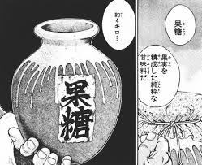

加藤清澄のホームページようこそ
加藤清澄は地下闘技場の聖戦士兼、神心会の空手家である。
路上での長年の格闘経験による、殺人空手を得意とする。
しかし周りのインフレについていけず、かませ犬と化した。
そんなところも彼の人気の一つである。
| 本名 | 加藤清澄 | かとうきよすみ |
| 二つ名 | 神心会のデンジャラス・ライオン | 核弾頭 |
| 必殺技 | 目突き | 急所攻撃 |
| 勝率 | ２勝３敗 | 2無効試合 |

↑最大トーナメントに入場した加藤。凛々しい佇まいだ。
神心会空手所属。しかし、一時期3年も道場に顔を出さず、ヤクザの用心棒をして腕を磨いた。
加藤本人曰く「道場通いの10倍スリリング」な経験をしたことで、拳銃と日本刀で磨かれた本物のケンカ空手を身につけた。
最大トーナメント（最トー）の入場28番目。
入場実況は「暗黒街で磨いた実戦カラテ！！ 神心会のデンジャラス・ライオン 加藤清澄だ！！！」
(https://manga-fan.info/baki/men/view/11 より引用)
神心会ホームページへ戻る
ごぶさたァ……
| 所属校 | 県立新座総合技術高等学校 |
| 学年 | ３年 |
| 組 | ２組 |
| 番号 | ３４番 |
| 氏名 | 森田裕生 |